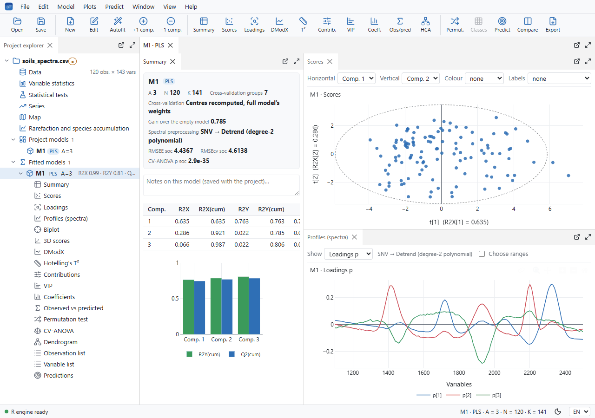

Nuée
PCA, PLS, community ecology, linear, generalized and mixed models, population monitoring and maps, on Windows and Linux, computed in R.
Nuée (version 1.0.0) is a desktop application to analyse field and laboratory data. Open a table from Excel, R, SPSS, Stata, SAS, jamovi or QGIS, or field surveys from KoboToolbox or ODK, pick your variables, and get the model with its plots, diagnostics and validation. The results go back to Excel, R, SPSS, Stata, SAS, jamovi or QGIS, with the paragraph for your Methods section, or as an R script that redoes the calculation without Nuée.


Who it is for
Field ecologists, managers of natural areas and environmental scientists, statisticians or not. Nuée helps you choose:
- Which analysis? (Model menu) asks your question in plain words: compare groups, the effect of variables, many species, a trend, a density, a before-after with controls… It proposes the response and the design from your columns, recommends an analysis and opens the model's window already filled in.
- Each regression's Summary gives its conditions in words: the residuals' normality, a spread that changes, influential observations, overdispersion, collinear terms, with what to do.
- The Methods text and the Results text are written from the model, in English or French, with their references.
What Nuée does
Multivariate
PCA, PLS, PLS-DA, OPLS, near-infrared spectra (SNV, MSC, derivatives), VIP, cross-validation, permutation tests.
Regressions
Linear and mixed models (nlme), GLMs and GAMs (mgcv) for counts, presences and proportions, with autocorrelation in time, adjusted means and AIC selection.
Communities
RDA, CA, CCA, PCoA, NMDS, PERMANOVA, Mantel test, indicator species, rarefaction.
Monitoring
Trends in series, before-after with controls (BACI), count indices (TRIM), densities by distance sampling.
Maps
Coordinates and their systems (Lambert-93, UTM…), GeoPackage for QGIS, raster values, spatial autocorrelation.
Publishing
Figures composed at a journal's size, PDF and Word reports, documents with citations, Export to R, R Markdown and Quarto.
All in R, on your computer
Every calculation is written in R, with comments, in the application's folder: you can read what was computed, and change it. The R console (View › R console) shows the call behind each action. The results are those of the reference packages (vegan, nlme, mgcv, emmeans, rtrim, Distance…), checked at every change.
Your data stay on your computer: Nuée sends nothing, except a question to GitHub at start-up about a newer version (it can be turned off in the Help menu), and the area shown to OpenStreetMap's or IGN's servers when you choose a background map.
Download
Nuée 1.0.0:
- Windows 10 and 11: Nuee-Setup-1.0.0.exe, R included;
- Debian, Ubuntu and their derivatives: Nuee-1.0.0-amd64.deb;
- other Linux distributions: Nuee-1.0.0-x86_64.AppImage or Nuee-1.0.0-x64.tar.gz.
How to install: see Install. Every version and its notes: the Releases page on GitHub; what changed: What’s new.
Getting started
- The tutorials follow three studies from start to finish: a before-after with controls (BACI), a PLS on spectra, and the monitoring of a bird population.
- In the application, Help › Example project opens 120 made-up apples with four ready models.
- The user guide describes every window and every calculation.
Nuée is free software (GPL-3.0). The interface is in English and French (View › Language). A problem, a question: open an issue on GitHub, in English or French; Help › Diagnostic information gives the versions to paste into it.